BIOLOGICAL DIVERSITY: BACTERIA AND
ARCHAEANS
Table of Contents
Domain Bacteria
(Eubacteria) | Bacterial
Structure | Bacterial
Reproduction
Classification of
Bacteria | The
Archea | The Fossil
Record | Links |
References
Traditional classifications have placed the archea
and bacteria into a single taxonomic kingdom due to theri
morphological similarity. In fact the two groups are extremely
different, as different from each other biochemically as eukaryotes
are from either group. Under the recently devised domain system, the
achaea and bacteria are placed into two separate domains, with the
third one containing all the eukaryotes. This system is shown in
Figure 1.
Domain
Bacteria (Eubacteria) | Back
to Top
The old taxonomic Kingdom Monera
consisted of the bacteria (meaning the true bacteria and
cyanobacteria, or photosynthetic bacteria) as well as the archea. The
modern classification, see Figure 1, seprates each of these groups to
separate domain status.
Organisms in the Domain Bacteria lack
membrane-bound organelles
such as the nucleus and endoplasmic reticulum that typify the third
domain, the Eukaryota. All members of Domain bacteria are
prokaryotes.
Bacteria (technically the Eubacteria)
and blue-green bacteria (the blue-green algae when I was a
student back in the 1970s), or cyanobacteria
are the major forms of life in this domain, examples of which are
shown in Figure 2.
Their small size, ability to rapidly reproduce
(for example, the intestinal bacterium E. coli can reproduce
by binary
fission every 15 minutes), and diverse
habitats/modes of existence make bacteria the most abundant and
diversified group of organisms on (and under!) the Earth. Bacteria
occur in almost every environment on Earth, from the bottom of the
ocean floor, deep inside solid rock, to the cooling jackets of
nuclear reactors. Possible bacteria-like structures have even been
recovered from 3 billion year old Martian meteorites. If these turn
out to be fossils (and as of 2002 it seems likely they are NOT), then
the bacterial form of life would have existed simultaneously on both
Earth and Mars. However, the cellular nature of the Martian
structures has not been conclusively established.
Bacteria, since they are prokaryotes, lack a
nuclear membrane and membrane-bound organelles. Biochemical processes
that normally occur in a choloroplast
or mitochondrion
of eukaryotes will take place in the cytoplasm of prokaryotes.
Bacterial DNA is circular and arrayed in a region of the cell known
as the nucleoid,
shown in Figure 3. Scattered within bacterial cytoplasm are numerous
small loops of DNA known as plasmids.
Bacterial genes are organized in by gene systems known as operons.
The cytoplasm also contains numerous ribosomes, the structures where
proteins are assembled. All bacteria also have a cell membrane, as
well as a cell wall, as shown in Figure 4.
|
Figure 3. Note the nucleoid region (n)
where DNA is located as well as the electron dense areas of
the cytoplasm (dark areas) on these two cells of
Neisseria gonorrhoeae. This image is from:
http://129.109.136.65/microbook/ch002.htm
|
|
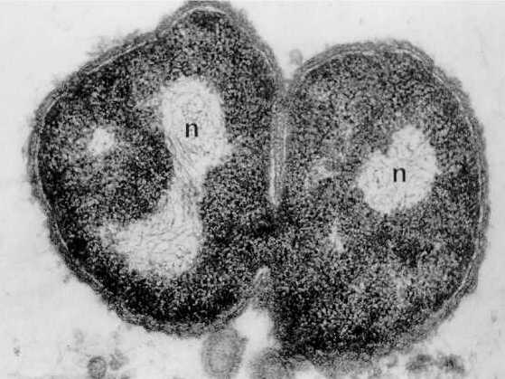
|
|
Figure 4. Structure of a "typical"
bacterium. Image from Purves et al., Life: The
Science of Biology, 4th Edition, by Sinauer Associates
(www.sinauer.com) and
WH Freeman (www.whfreeman.com),
used with permission.
|
|
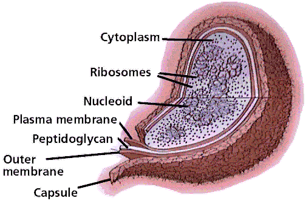
|
As a group, bacteria are nutritionally quite
diverse. Some bacteria are photosynthetic autotrophs, while others
are heterotrophs. Bacteria play important ecological roles as
decomposers, as well as important elements of phytoplantonic
organisms at the base of many food chains.
Plasmids
are small DNA fragments known from almost all bacterial cells. These
plasmids may carry between two and thirty genes. Some plasmids seem
to have the ability to move in and out of the bacterial chromosome.
As such they are important tools to the biotechnology
arsenal.
The operon model of prokaryotic gene regulation
was proposed by Fancois Jacob and Jacques Monod. Groups of genes
coding for related proteins are arranged in units known as operons,
as illustrated by Figure 5. An operon consists of an operator,
promoter, regulator, and structural genes. The regulator gene codes
for a repressor protein that binds to the operator, obstructing the
promoter (thus, transcription) of the structural genes. The regulator
does not have to be adjacent to other genes in the operon. If the
repressor protein is removed, transcription may occur.
|
Figure 5. Structure of a typical
operon. Image from Purves et al.,
Life: The Science of Biology, 4th Edition, by Sinauer
Associates (www.sinauer.com)
and WH Freeman (www.whfreeman.com),
used with permission.
|
|
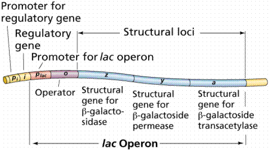
|
Operons are either inducible or repressible
according to the control mechanism. Seventy-five different operons
controlling 250 structural genes have been identified for E.
coli.
Bacteria have flagella, shown in Figure 6,
although the bacterial flagellum has a different microtubule
structure than the flagella of eukaryotes. Cell
walls of bacteria contain the
peptidoglycan instead of the cellulose
found in cell walls of plants and some algae. Ribosomes
are the structures in cells where proteins are assembled. Bacterial
ribosomes have different sized ribosomal
subunits than do eukaryotes.
Bacteria typically have one of three shapes: rods
(bacilli), spheres (cocci) or spiral (spirilla). These shaps are
shown in Figures 7 and 8. Unicellular, they often stick together
forming clumps or filaments.
|
Figure 8. Spherical (cocoid) and spiral
bacteria. Top: Coccoid-shaped Bacterium (causes skin
infections), Enterococcus faecium (SEM x33,370). This
image is copyright Dennis Kunkel at www.DennisKunkel.com,
used with permission; Bottom: Left, a cross-section of a
cell illustrating the location of a flagella inside the
cell; Center, Borrelia burgdorferi, the organism that
causes Lyme disease; and Right, Treponema pallidum,
the spirochete that causes the venereal disease
syphilis. The image above is from
http://www.bact.wisc.edu/Bact303/MajorGroupsOfProkaryotes.
|
|
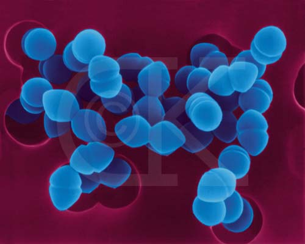
|
|
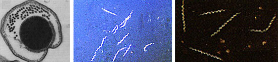
|
Bacterial
Reproduction | Back
to Top
Prokaryotes
are much simpler in their organization than are eukaryotes. There are
a great many more organelles
in eukaryotes, as well as more chromosomes to be moved around during
cell division. The typical method of prokaryote cell division is
binary
fission, shown in the animated GIF below
as well as in Figure 10. The prokaryotic chromosome is a single DNA
molecule that first replicates, then attaches each copy to a
different part of the cell membrane. When the cell begins to pull
apart, the two chromosomes thus are separated. Following cell
splitting (cytokinesis),
there are now two cells of identical genetic composition (except for
the rare chance of a spontaneous mutation).
Animated GIF of binary fission. Image from:
http://www.slic2.wsu.edu:82/hurlbert/micro101/pages/Chap2.html#two_bact_groups
|
Figure 10.
Rod-Shaped Bacterium, E. coli,
dividing by binary fission (TEM x92,750). This image is
copyright Dennis Kunkel at www.DennisKunkel.com,
used with permission.
|
|
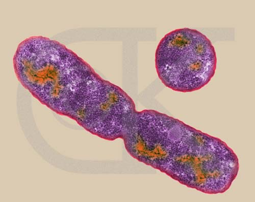
|
One consequence of this asexual
method of reproduction is that all bacterial cells in a colony are
genetically the same. When treating a bacterial disease, a drug that
kills one bacteria of a specific type will normally kill all other
members of that clone (colony) it comes in contact with. Evolution
requires genetic variation on which to operate. How then can bacteria
increase their genetic variation if their typical mode of
reproduction produces clones?
Bacteria can accomplish genetic recombination in
three ways. Conjugation, shown in Figures 11 and 12, is the process
where one bacterium passes DNA to another through a tube (the sex
pilus) that temporarily joins the two conjugating cells. Conjugation
occurs only between bacteria in same or closely related species.
Transformation involves a bacterium taking up free pieces of DNA
secreted by live bacteria or released by dead bacteria. into the
surrounding environment. Recall that Griffith's experiment
demonstrated this process. The third process, transduction, happens
when bacteriophage transfer portions of bacterial DNA from one cell
to another.
Certain types of bacteria can "donate" a piece of
the their DNA to a recipient cell. The recombination is the bacterial
equivalent of sexual reproduction in eukaryotes. Note that the entire
DNA is not usually transferred, only a small piece.
|
Figure 12. E.
coli strains undergoing conjugation (TEM
x27,700). This image is copyright
Dennis Kunkel at www.DennisKunkel.com,
used with permission.
|
|
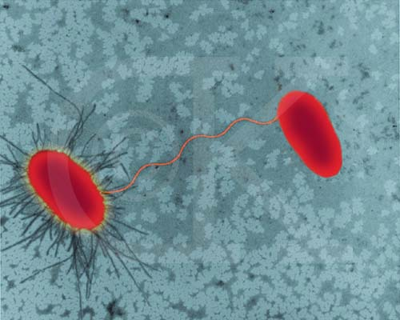
|
Plasmids sometimes carry genes for resistance to
antibiotics. Since they are also DNA, plasmids can be transferred
between bacteria by any of the three processes mentioned above. Since
genetic recombination does not routinely happen (as it does in
sexually reproducing eukaryotes), mutation is the most important
source of genetic variation for evolutionary change. Normally
bacteria have short generation times, mutations are generated and
distributed throughout bacterial populations more quickly than in
eukaryotes. Prokaryotes have only a single chromosome, which makes
them haploid. Consequently, mutations are not hidden by a dominant
allele, and will be expressed and evaluated by natural selection more
rapidly than in diploid eukaryotes.
Endospores are a method of survival, not one of
reproduction. The formation of an endospore is shown in Figure 13.
Certain bacteria will form a spore inside their cell membrane (an
endospore) that allows them to wait out deteriorating environmental
conditions. A small portion of cytoplasm and a chromosome copy are
surrounded by three heavy, protective spore coats. The part of the
bacterial cell outside the endospore deteriorates and the endospore
is released. Endospores allow bacteria that produce them to survive
in the harshest of environments. When conditions once again become
suitable, the endospore absorbs water and grows out of its spore
coat.
Certain disease causing bacteria (such as
Bacillus anthracis, the cause of the disease anthrax) can be
virulent (capable of causing an infection) for up to 1300 years after
forming their endospore! Because of this, as well as other factors,
the anthrax bacterium has been considered as a possible biological
weapon. Following the September 11, 2001 terrorist attacks, several
people died from anthrax exposure, and one postal facility was closed
(as was the U.S. Senate building) for several weeks. As of March
2003, no connection between these events has been definitely
established.
Classification
of Bacteria | Back
to Top
Bacteria are classified on the basis of their
method of energy acquisition. Traditional classifications include
chemosynthetic, photosynthetic, and heterotrophic groups. Molecular
and cladistic studies are reshaping these traditional groups. In the
absence of a consensus the traditional groups are employed
here..
Chemosynthetic Bacteria
Chemosynthetic
bacteria are autotrophic,
and obtain energy from the oxidation of inorganic compounds such as
ammonia, nitrite (to nitrate), or sulfur (to sulfate).
Photosynthetic Bacteria
Photosynthetic bacteria carry out conversion of
sunlight energy into carbohydrate energy. Cyanobacteria, an example
of which is shown in Figure 13, are the major group of photosynthetic
bacteria. Some early cyanobacteria may have formed the oxygen
released into the early atmosphere, transforming our planet from one
with an oxygen-free atmosphere, to the modern one that has a
significant amount of oxygen present.. In addition to
chlorophyll
a, cyanobacteria also have the blue
pigment phycocyanin
and the red pigment phycoerythrin.
|
Figure 13. Filamentous cyanobacterium,
Anabaena sp. (SEM x5,000). This image is copyright
Dennis Kunkel at www.DennisKunkel.com,
used with permission.
|
|
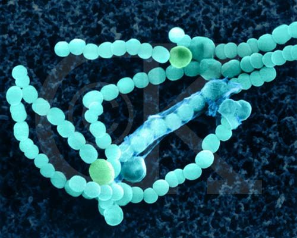
|
Eukaryotic autotrophs all have chloroplasts in
which the photosynthetic process occurs. The typical chloroplast
organization has thylakoids surrounded by a fluid-like stroma. The
chloroplast is a membrane bound organelle. Prokaryotes by definition
lack such structures. How can bacteria carry out photosynthesis? The
answer is shown in Figure 14. By infolding their cell membrane,
prokaryotic autotrophs form thylakoids, in effect turning the
bacterium into a single chloroplast.
|
Figure 14 Prochloron, a
photosynthetic bacterium that illustrates that even though
they lack chloroplasts, photosynthetic bacteria have
infoldings of the cell membrane that form thylakoids inside
the cell's cytoplasm. . TEM, magnification not known. Image
from http://tidepool.st.usm.edu/pix/prochloron.gif.
|
|
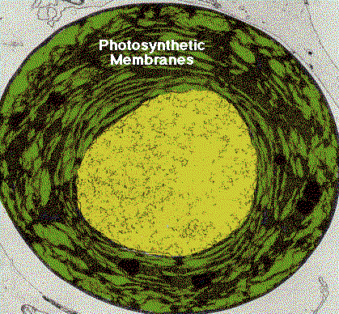
|
More primitive photosynthesizing bacteria (e.g.,
green sulfur bacteria and purple sulfur bacteria) use only
photosystem I that contains bacteriochlorophyll. In this style of
photosynthesis, no O2 is formed, since hydrogen sulfide
(H2S) is used as an electron and H+ donor
instead of H2O.
Heterotrophic Bacteria
Members of this large and diverse group must
derive their energy from another organism by feeding. Two main types:
saprophytic
and symbiotic.
Saprophytes feed on dead or decaying material and are important
nutrient recyclers. Symbiotic bacteria live within a host
multicellular organism and contribute to the health of the host.
Examples include cows and other grazing animals: the bacteria convert
cellulose
from plant leaves and stems eaten by the animal into glucose
for digestion by the animal. Normally cellulose is nondigestible.
Possible symbiosis of bacteria within early
eukaryotic cells was a major step in the evolution of eukaryotic
cells. In 1980, Lynn Margulis proposed the theory of endosymbiosis,
diagrammed in Figure 15, to explain the origin of mitochondria and
chloroplasts from permanent resident prokaryotes. According to this
idea, a larger prokaryote (or perhaps early eukaryote) engulfed or
surrounded a smaller prokaryote some 1.5 billion to 700 million years
ago.
|
Figure 15. Steps in endosymbiosis. Image
from Purves et al., Life: The Science of Biology, 4th
Edition, by Sinauer Associates (www.sinauer.com)
and WH Freeman (www.whfreeman.com),
used with permission.
|
|
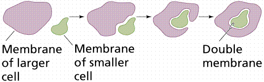
|
Instead of digesting the smaller organisms the
large one and the smaller one entered into a type of symbiosis
known as mutualism,
where both organisms benefit and neither is harmed. The larger
organism gained excess ATP provided by the "protomitochondrion" and
excess sugar provided by the "protochloroplast", while providing a
stable environment and the raw materials the endosymbionts required.
This is so strong that now eukaryotic cells cannot survive without
mitochondria (likewise photosynthetic eukaryotes cannot survive
without chloroplasts), and the endosymbionts cannot survive outside
their hosts. Nearly all eukaryotes have mitochondria. Mitochondrial
division is remarkably similar to the prokaryotic methods that will
be studied later in this course. A
summary of the theory is available by clicking
here.
A vital symbiosis that bacteria seem to have
participated in for hundreds of millions of years is their
relationship with plants, both as soil nitrogen-fixing bacteria, as
well as internal guests in the root nodules of plants of the pea
family. Most organisms cannot use atmospheric nitrogen
(N2) directly. Some bacteria have the metabolic pathways
to convert inorganic N2 into various forms of organic
nitrogen. Mutualistic nitrogen-fixing bacteria, such as
Rhizobium, live in nodules on the roots of soybean, clover,
and alfalfa plants (all members of the pea family, Fabaceae), where
they reduce N2 to ammonia (NH4) to the benefit
of both themselves as well as their their host. These bacteria also
benefit by using some of a plant's photosynthetically produced
organic molecules.
Plants need nitrogen for many important biological
molecules including nucleotides and proteins. However, the nitrogen
in the atmosphere is not in a form that plants can utilize. Many
plants have a symbiotic
relationship with bacteria growing in their roots: organic nitrogen
as rent for space to live, as shown in Figure 16. These plants tend
to have root nodules in which the nitrogen-fixing bacteria live.
|
Figure 16. Development of a root nodule,
a place in the roots of certain plants, most notably legumes
(the pea family), where bacteria live symbiotically with the
plant. Images from Purves et al., Life: The
Science of Biology, 4th Edition, by Sinauer Associates
(www.sinauer.com) and
WH Freeman (www.whfreeman.com),
used with permission.
|
|
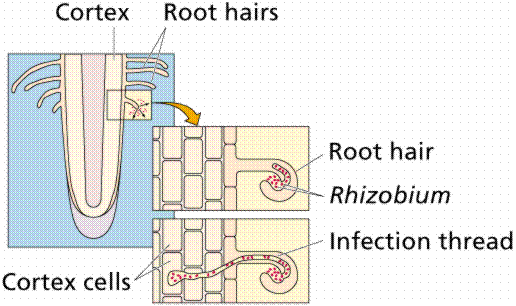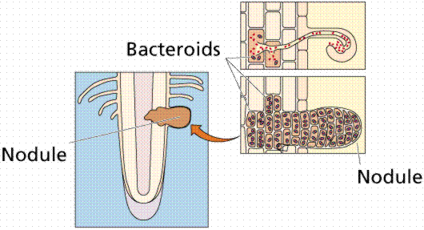
|
All the nitrogen in living systems was at one time
processed by these types of bacteria, which took atmospheric nitrogen
(N2) and modified it to a form that living things could
utilize (such as NO3 or NO4; or even as
ammonia, NH3 in the example shown below in Figure
17).
|
Figure 17. Pathway for converting
(fixing) atmospheric nitrogen, N2, into organic
nitrogen, NH3. Images from
Purves et al., Life: The Science of Biology, 4th
Edition, by Sinauer Associates (www.sinauer.com)
and WH Freeman (www.whfreeman.com),
used with permission.
|
|
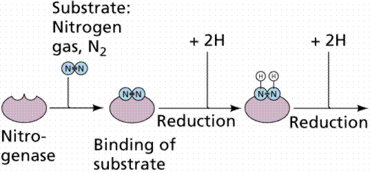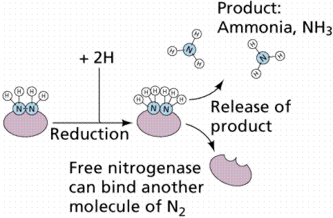
|
Not all bacteria utilize
the above route of nitrogen fixation. Many that live free in the
soil, utilize other chemical pathways, as shown in Figure
18.
|
Figure 18. Nitrogen uptake and conversion
by various soil bacteria. Images from
Purves et al., Life: The Science of Biology, 4th
Edition, by Sinauer Associates (www.sinauer.com)
and WH Freeman (www.whfreeman.com),
used with permission.
|
|
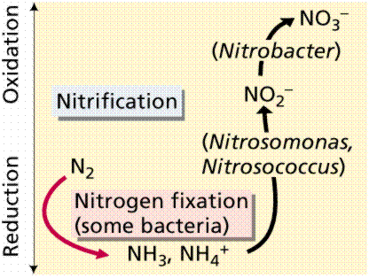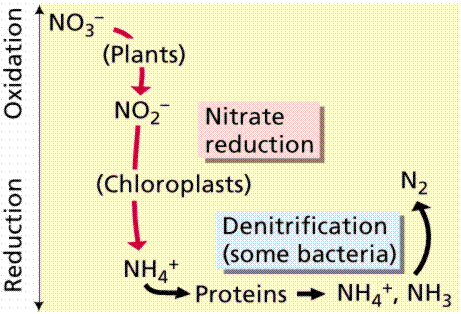
|
Many heterotrophic bacteria also cause diseases
such as strep throat, rheumatic fever, cholera, gonorrhea, syphilis,
and toxic shock syndrome. Bacteria can cause disease by destroying
cells, releasing toxins, contaminating food, or by the reaction of
the body to the infecting bacteria. Bacterial infections can be
controlled by vaccinations and antibiotic treatments. Antibiotics
interfere with some aspect of the replication of bacteria, and are
produced by microorganisms such as fungi, that compete with bacteria
for resources. Penicillin, the first antibiotic discovered, inhibits
the synthesis of new cell walls in certain types of bacteria.
However, the overuse of antibiotics during the past fifty years has
led to natural
selection favoring antibiotic resistance.
There are reportedly more than 50 strains of antibiotic resistant
bacteria, necessitating the development of new antibiotics and the
frequent change of antibiotics in treatment.
Peptic
ulcers result when these protective
mechanisms fail. Bleeding ulcers result when tissue damage is so
severe that bleeding occurs into the stomach. Perforated ulcers are
life-threatening situations where a hole has formed in the stomach
wall. At least 90% of all peptic ulcers are caused by Helicobacter
pylori. Other factors, including stress and aspirin, can also
produce ulcers.
Gonorrhea
and syphilis
are among the most common bacterially caused sexually transmitted
diseases. Both can be treated and cured with antibiotics, once
diagnosed. Once considered likely to result in death, syphilis is
usually curable with antibiotics, although overuse of antibiotics can
reduce their effectiveness.
Treponema pallidum is the bacterial species
that causes syphilis. Syphilis is transmitted from an infected person
to an uninfected one by direct contact with a syphilis sore during
vaginal, anal, or oral sex. Proper use of condoms has been shown to
reduce the incidence of syphilis. Syphilis sores occur mainly on the
genitals, vagina, anus, or in the rectum, as well as on the lips and
inside the mouth. Infected, pregnant women can pass it to their
unborn child. The urban myth about getting this disease from a toilet
seat is untrue. Syphilis cannot be spread by toilet seats, door
knobs, swimming pools, hot tubs, bath tubs, or sharing of clothing or
eating utensils. There are three stages to the disease. The prim,ary
stage is the time between infection and the start of the first
symptom, ranging from 10-90 days. The primary stage normally in
indicated by the appearance of a single sore also known as a chancre.
The chancre is usually round, firm, small and painless, and appears
where syphilis entered the body. If proper treatment is not utilized,
the diease moves into the secondary stage. The second stage occurs
when some area(s) of the skin develop an itchless rash. Rashes can
appear as the chancre is fading or can be delayed for weeks. The rash
often appears as rough, red or reddish brown spots both on the palms
of the hands and on the bottoms of the feet. The rash also may also
appear on other parts of the body.. Even without treatment, rashes
clear up on their own. In addition to rashes, second-stage symptoms
can include fever, swollen lymph glands, sore throat, patchy hair
loss, headaches, weight loss, muscle aches, and tiredness. The
disease can pass to sex partners when primary or secondary stage
symptoms are showing. The latent, or hidden, stage of syphilis
initiates when the symptoms of the second stage disappear. Without
treatment, an infected individual still has syphilis, even though he
or she does not display symptoms. Treponema pallidum remains
in the body, and so may begin to damage internal organs, suc as the
brain, nerves, eyes, heart, blood vessels, liver, bones, and joints.
This internal damage may not show up until many years later when the
person enters the late or tertiary stage of syphilis. Late stage
symptoms include the inability to coordinate muscle movements,
paralysis, numbness, gradual blindness and dementia. This damage may
be serious enough to cause death. Because of this progress of ther
disease, often resulting in death, the disease was one greatly feared
before the advent of antibiotics.
Gonorrhea is another common sexually transmitted
disease caused by Neisseria gonorrhoeae, a bacterium. This
bacterium can grow in the reproductive tract, including the cervix,
uterus, and fallopian tubes in women, as well as in the urethra in
both men and women. The bacteria can also grow in the mouth, throat,
and anus. Gonorrhea is spread through vaginal, oral, or anal sexual
contact. Ejaculation does not have to occur for gonorrhea to be
transmitted or acquired. Gonorrhea can also be transmitted during
birth. Symptoms include a burning sensation during urination and a
yellowish white discharge from the penis. Some infected males may
have painful or swollen testicles. Many women often do not show
strong signs of the early symptoms of gonorrhea. The initial symptoms
for women include a painful or burning sensation upon urination, as
well as a yellow or occasionally bloody vaginal discharg. Women with
no or mild gonorrhea symptoms are still at risk of developing serious
complications from the infection. Untreated gonorrhea in women can
develop into pelvic inflammatory disease. Rectal infection has
symptoms such as discharge, anal itching, soreness, bleeding, and
sometimes painful bowel movements. Infections in the throat cause few
symptoms. Penicillin is a common antibiotic no longer used to treat
gonorrhea due to the development of penicillin-resistant strains of
the gonorrhea bacterium.
Salmonella is a genus of rod-shaped
bacterium whose species cause typoind fever and similar illnesses.
The bacteria of this genus are widespread in animals, especially in
poultry and pigs. Environmental sources of the organism include
water, soil, insects, kitchen surfaces, feces, and raw meat, seafood,
and poultry.
The most primitive group, the archaebacteria,
are today restricted to marginal habitats such as hot springs or
areas of low oxygen concentration. Archaebacteria (now more commonly
referred to as the Archaea) are considered among the oldest and most
primitive types of organisms known. They have significant differences
in their cell walls and biochemistry when compared to the bacteria.
These differences are sufficient in most schemes, to place the
Archaea into a separate kingdom or domain. Under the three domain
model, they are the taxonomic equivalents of the other bacteria and
the eukaryotes. It is thought that since bacteria and Archaea inhabit
some of the modern environments thought by paleontologists to
resemble what the early Earth was like, that both are descended from
a common ancestor. The Eukarya later split from the Archaea.
The archeans are life's extremists, occupying
environments that "normal" organisms find too harsh. Three types of
archaebacteria: methanogens, halophiles, and thermacidophiles. They
live in extreme habitats.
|
Figure 19. Sulfolobus
acidocaldarius , an extreme thermophile occurs in
geothermally-heated acid springs, mud pots and surface
soils; it can withstand temperatures from 60 to 95 degrees
C, and a pH of 1 to 5. Left: Electron micrograph of a thin
section (X85,000); Right: Fluorescent photomicrograph of
cells attached to a sulfur crystal.
The image above is from http://www.bact.wisc.edu/Bact303/MajorGroupsOfProkaryotes.
|
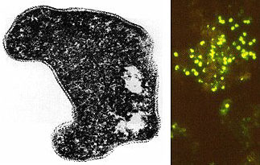
|
The methanogens are chemosynthetic archeans that
produce methane (CH4) from hydrogen gas and
CO2. Both ATP synthesis and CO2 reduction are
linked to this reaction. Methanogens can decompose animal wastes to
produce methane, which can be collected and combusted to make
ecological friendly electricity. Pollutants from methane combustion
are much fewer than from combustion of coal.
There are three groups of Archaea. The methanogens
live under anaerobic environments (e.g., marshes) where they produce
methane. Halophiles require high salt concentrations (such as in
Utah's Great Salt Lake). Thermoacidophiles live under hot, acidic
environments (like those found in geysers).
Fossil
evidence supports the origins of life on earth earlier than 3.5
billion years ago. Specimens from the North Pole region of Western
Australia are of such diversity and apparent complexity that even
more primitive cells must have existed earlier. Rocks of the Ishua
Super Group in Greenland yield possibly the fossil remains of the
earliest cells, 3.8 billion years old. The oldest known rocks on
earth are 3.96 Ga and are from Arctic Canada. Thus, life appears to
have begun soon after the cooling of the earth and formation of the
atmosphere and oceans.
These ancient fossils occur in marine rocks, such
as limestones and sandstones, that formed in ancient oceans. The
organisms living today that are most similar to ancient life forms
are the archaebacteria
(the archaea in modern usage). This group is today restricted to
marginal environments. Recent discoveries of bacteria at mid-ocean
ridges add yet another possible origin for life: at these mid-ocean
ridges where heat and molten rock rise to the earth's
surface.
Many of the ancient phototrophs and heterotrophic
bacteria lived in colonial associations known as stromatolites.
Cyanobacteria are on the outer surface, with other photosynjthetic
bacteria (anoxic) below them. Below these phottrophs are layers of
heterotrophic bacteria. The layers in the stromatolites are
alternating biogenic and sedimentologic in origin. A modern day
stromatolite is shown in Figure 20.
- Review the characteristics of life from the first
chapter. Which of these is/are present in bacteria? Which
is/are absent?
- How does parokaryotic cell structure differ from that of the
eukaryotes?
- How do prokaryotic and eukaryotic cell division processes
differ? What must occur in any type of cell division?
- List the significance, to humans, ecology, and other things,
of bacteria.
- Be able to list the main steps in the nitrogen fixing process
commonly used by bacteria.
- Be able to explain to a fellow student how mycorrhizae fungi
actually help a plant when they infect it.
- Use the Internet to locate information about a bacterially
caused human disease. What treatments are available?
- Which of these is not a typical shape for a bacterial cell? a)
rod; b) spiral; c) spherical; d) all are typical bacterial shapes.
ANS is d
- Bacteria divide to produce new cells using which of the
following processes? a) mitosis; b) binary fission; c) meiosis; d)
karyogamy ANS is b
- Bacteria have which of these structures in common with
eukaryotes? a) nucleus; b) miotchondria; c) ribosomes; d)
endoplasmic reticulum ANS is c
- The oldest known fossils on Earth are most similar to ___. a)
animals; b) plants; c) fungi' d) bacteria ANS is d
- Bacteria are important as ___. a) food; b) decomposers;
c) producers of antibiotics and other medicines; d) all of these
ANS is d
- The form of nitrogen listed below that can be utilized by most
living things is ___. a) N2; b)
H2NO3; c) NH4; d) none of these
can be used in their listed form by living things. ANS is c.
- If two organisms are in a symbiotic relationship and one
causes harm to the other, that relationship is described as ___.
a) parasitism; b) communism; c) mutualism; d) capitalism ANS is
a
- Photosynthesis by bacteria produced ____ as a waste product.
a) glucose; b) carbon dioxide; c) oxygen; d) all of these are
produced by photosynthesis. ANS is c
- Thylakoids are ___. a) infoldings of the bacterial plasma
membrane on which the enzymes of aerobic respiration are located;
b) not found in photosynthetic bacteria; c) infoldings of the
bacterial plasma membrane on which the enzymes of photosynthesis
are located; d) structures only found in eukaryotic chloroplasts.
ANS is c
- Which of these is a bacterially caused disease? a) herpes; b)
syphilis; c) AIDS; d) Huntingdon's Disease. ANS is b
- Which of these bacterial diseases is spread by sexual contact?
a) gonorrhea; b) salmonella; b) typhoid
fever; d) food spoilage ANS is a
Schopf, J. W. 1999 Cradle of Life: The
Discovery of earth's Earliest Fossils. Princeton University
Press, 367 p.
All text contents ©1995, 1999, 2000, 2001, 2007, by M.J.
Farabee. Use for educational purposes is encouraged.
Back to Table of Contents
Email: mj.farabee@emcmail.maricopa.edu
Last modified:
The URL of this page is:
{kind=link}
{kind=link}
{kind=link}
{kind=link}